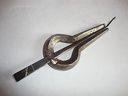

A morsing is a wind percussion instrument, mainly used in Rajasthan, in the
Carnatic music of South India and in Sindh (Pakistan). It can be categorized
under lamellophones, which is in the category of plucked idiophones.
It consists
of a metal ring in the shape of a horseshoe with two parallel forks which form
the frame, and a metal tongue in the middle, between the forks, fixed to the
ring at one end and free to vibrate at the other. The metal tongue is bent at
the free end in a plane perpendicular to the circular ring so that it can be
struck and is made to vibrate. This bent part is called the trigger.
n instrument with a history of 1500 years, its exact origin in India is not well
documented. In the tradition of the Indian gurukul system of teaching, thus folk
tales are a secondary source of its history.
In India it is found mainly in
South India, Rajasthan and also in some parts of Assam. It is also sometimes
used while playing Rabindrasangeet in Bengal and in Assamese folk songs.
In
South India, it features in Carnatic concerts and percussion ensembles. It is
said to be the percursor to subsequent instruments such as the harmonica and the
harmonium.
In Rajasthan it is called morchang and is used as a percussion instrument in lok
geet (folk music). It was often used in Hindi cinema by music directors like
R.D. Burman and S.D.Burman, and has resurfaced in the twentieth century, with
street performers like Varun Zinje playing it in a renewed style.

Playing technique:
The morsing is placed on the front teeth, with slightly pouted lips and held
firmly in the hand. It is struck using the index finger of the other hand to
produce sound. Movement of the player's tongue while making nasal sounds brings
out the beauty of this heavenly instrument.
This can be achieved when the South
Indian letter 'Nga' or a variant thereof, is sounded thru the nose while air is
pushed out or pulled in thru the mouth.
This aids the meditation process and
thus some players use it as a form of practising pranayama. Others speak into
the instruments while playing, thus giving it the effect of a light haunting
echo.
The morsing is firmly held in the hand, the frame or the ring between the palm
and the fingers usually in the left hand.
Care should be taken to see that the
middle part or the metal tongue is not being touched when held idle. Then the
upper of the two parallel forks is firmly pressed against the front upper teeth;
the lower fork, against the front lower teeth with the lips helping to keep the
contact, so that the metal tongue will not contact the teeth when it moves. The
trigger is plucked with the tip of the index finger.
Sound is produced due to
the vibration of the metal tongue thath is transferred through the teeth and
sounds in mouth and nasal cavity. Movement of the player's tongue with constant
plucking can produce very fast patterns of sound.
By constricting the space in
the mouth the nostrils can produce sounds in different phases, similar to
phasors in electronic music.
While traditionally made of iron, variants can be made from wood, bone, and even
plastic and credit cards.
Tuning:
The basic pitch of the instrument can be varied very little. Significantly, the
pitch of the instrument can only be reduced and not increased.
To reduce the
pitch a little, bee-wax can be applied on the plucking end. To increase the
pitch, it can be filed, although this may damage the instrument.
Advanced playing and the art of accompaniment:
As the morsing is played most of the time along with the mridangam or dhol, it
is necessary to know the syllables or aural interpretation of what is played on
mridangam.
It is important to know the aural representation of the ferns
(pattern of syllables played on percussion instruments) played on mridangam as
it is being silently recited while playing the morsing.
This vocal art of
reciting the syllables played on the mridangam is called konnakol. But while
playing on morsing you don't actually make sound of reciting the syllable but
just move your tongue that way so that the air passages gets blocked and cleared
in a pattern so as to produce the sound of the ferns.
It is essential to follow
the mridangam and play the same ferns as far as possible, though it is difficult
owing to the limitations of the instrument.
Glimpses of uniqueness and versatility of the morsing can be shown when
accompanying singly for the song or during neraval or swara prastara (stages of
song rendition in Carnatic music).
The morsing is played as a shadow of the
mridangam throughout the concert and the instrument's capabilities should be
exhibited when playing or accompanying alone or during Thani (percussion round
in a concert) or talavadyas (percussion ensembles).
Though working on completely different principles, the music of the Morchang
sounds similar to that emanating from the Australian didgeridoo.
Variants across the world:
The Morchang exists, in nearly the same form and design all over the world, and
is called by different names (estimated to be around 900) in different
languages. For example: Morchang / morsing (India), Caoxang (China), Vargang
(Russia), Montharpa (Norway), Zanboorak (Farsi, Iran), Maalthaamel (Germany),
Gumbahtha (France), Maranzano (Italy), Daromp (Hungary) and Dambrialis banda
umbrealis (Lithuania).
It may have spread and been shared between countries
through the ancient trade routes between Asia and Europe, including the Silk
route. Its popular name Jew's harp is a corruption of the name jaw harp.
Morsingists:
Players of the Morchang / Jaw harp are sometimes called Morsingists. Current day
players include Varun Zinje, Ortal Pelleg, Valentinas, Viaceslavas,[5] the
Barmer boys (Rais Bhungar and Mangu Khan) and a number of Rajasthani folk music
players from the traditional entertainer tribe of Laggas. Morsingists from
earlier eras include Abraham Lincoln and the Russian Tsar Peter the Great.
Other Morsingists include:
Pirashanna Thevarajah
Srirangam Kannan
Bejjanki V Ravi Kiran
T S Nandakumar
Interestingly, playing the Jaws harp was forbidden during Stalin's regime in
Russia due to its close ties with Shamanism. Shamans believed that the Jaws harp
could take a person to the world of spirits.